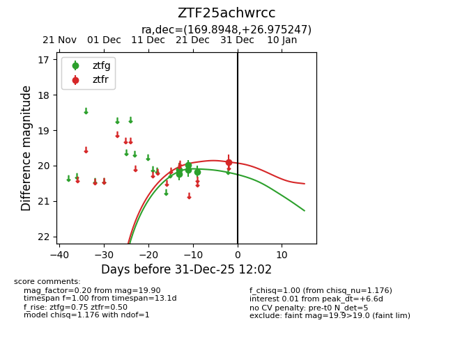
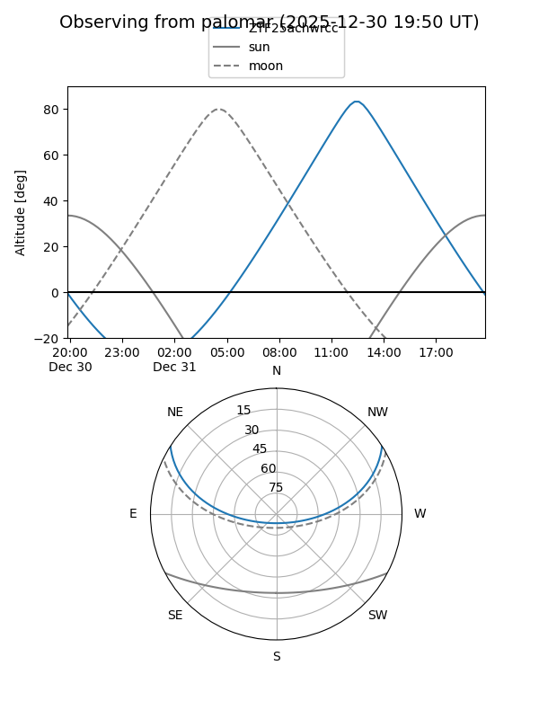
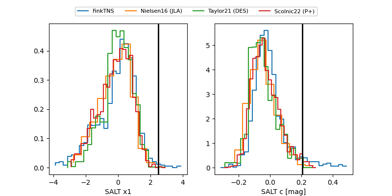

ZTF25achwrcc
Target ZTF25achwrcc at 2025-12-31 12:03
Aliases and brokers:
FINK:
Lasair:
ALeRCE:
alt names
ZTF25achwrcc (ztf,fink_ztf)
Coordinates:
equatorial (ra, dec) = 169.8948,+26.97525
equatorial (HMS+DMS) = 11:19:34.75,+26:58:30.89
galactic (l, b) = (208.0766,+69.57585)
Flags:
Photometry:
last ztfg=20.17, ztfr=19.90
5 ztfg, 1 ztfr detections
Lightcurve

Visibility


Additional plots
